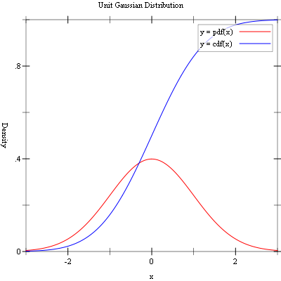

7 Random Number Distributions
7.2.1 Random Variates from the Bivariate Haussian Distribution |
7.8.1 Random Variates from the Gaussian (Normal) Distribution |
This chapter describes the functions for generating random variates and computing their probability densities provided by the Science Collection/
The functions described in this chapter are defined in the random-distributions sub-collection of the Science Collection. All of the modules in the random-distributions sub-collection can be made available using the form:
(require williams/science/random-distributions)
The random distribution graphics are provided as separate modules. To also include the random distribution graphics routines, use the following form:
(require williams/science/random-distributions-with-graphics)
The individual modules in the random-distributions sub-collection can also be made available as described in the sections below.
7.1 The Beta Distribution
Beta Distribution from Wolfram MathWorld.
The beta distribution functions are defined in the "beta.rkt" file in the random-distributions subcollection of the Science Collection and are made available using the form:
| (require (planet williams/science/random-distributions/beta)) |
7.1.1 Random Variates from the Beta Distribution
procedure
(random-beta s a b) → (real-in 0.0 1.0)
s : random-source? a : real? b : real? (unchecked-random-beta s a b) → (real-in 0.0 1.0) s : random-source? a : real? b : real? (random-beta a b) → (real-in 0.0 1.0) a : real? b : real? (unchecked-random-beta a b) → (real-in 0.0 1.0) a : real? b : real?
Example: Histogram of random variates from the beta distribution with parameters a = 2.0 and b = 3.0.
#lang racket (require (planet williams/science/random-distributions/beta) (planet williams/science/histogram-with-graphics)) (let ((h (make-histogram-with-ranges-uniform 40 0.0 1.0))) (for ((i (in-range 10000))) (histogram-increment! h (random-beta 2.0 3.0))) (histogram-plot h "Histogram of the Beta Distribution"))
The following figure shows the resulting histogram:
7.1.2 Beta Distribution Density Functions
procedure
x : real? a : real? b : real? (unchecked-beta-pdf x a b) → (>=/c 0.0) x : real? a : real? b : real?
procedure
x : real? a : real? b : real? (unchecked-beta-cdf x a b) → (real-in 0.0 1.0) x : real? a : real? b : real?
7.1.3 Beta Distribution Graphics
The beta distribution graphics are defined in the "beta-graphics.rkt" file in the random-distributions sub-collection of the Science Collection and are made available using the form:
| (require (planet williams/science/random-distributions/beta-graphics)) |
Example: Plot of the probability density and cumulative density of the beta distribution with parameters a = 2.0 and b = 3.0.
#lang racket (require (planet williams/science/random-distributions/beta-graphics)) (beta-plot 2.0 3.0)
The following figure shows the resulting plot:

7.2 The Bivariate Gaussian Distribution
The bivariate Gaussian distribution functions are defined in the "bivariate-gaussian.rkt" file in the random-distributions subcollection of the Science Collection and are made available using the form:
| (require (planet williams/science/random-distributions/bivariate-gaussian)) |
7.2.1 Random Variates from the Bivariate Haussian Distribution
procedure
(random-bivariate-gaussian s sigma-x sigma-y rho) →
real? real? s : random-source? sigma-x : (>=/c 0.0) sigma-y : (>=/c 0.0) rho : (real-in -1.0 1.0)
(unchecked-random-bivariate-gaussian s sigma-x sigma-y rho) →
real? real? s : random-source? sigma-x : (>=/c 0.0) sigma-y : (>=/c 0.0) rho : (real-in -1.0 1.0)
(random-bivariate-gaussian sigma-x sigma-y rho) →
real? real? sigma-x : (>=/c 0.0) sigma-y : (>=/c 0.0) rho : (real-in -1.0 1.0)
(unchecked-random-bivariate-gaussian sigma-x sigma-y rho) →
real? real? sigma-x : (>=/c 0.0) sigma-y : (>=/c 0.0) rho : (real-in -1.0 1.0)
Example: 2D histogram of random variates from the bivariate Gaussian distribution with standard deviation 1.0 in both the x and y direction and correlation coefficient 0.0.
#lang racket (require (planet williams/science/random-distributions/bivariate) (planet williams/science/histogram-2d-with-graphics)) (let ((h (make-histogram-2d-with-ranges-uniform 20 20 -3.0 3.0 -3.0 3.0))) (for ((i (in-range 10000))) (let-values (((x y) (random-bivariate-gaussian 1.0 1.0 0.0))) (histogram-2d-increment! h x y))) (histogram-2d-plot h "Histogram of the Bivariate Gaussian Distribution"))
The following figure shows the resulting histogram:

7.2.2 Bivariate Gaussian Distribution Density Functions
procedure
(bivariate-gaussian-pdf x y sigma-x sigma-y rho) → (>=/c 0.0) x : real? y : real? sigma-x : (>=/c 0.0) sigma-y : (>=/c 0.0) rho : (real-in -1.0 1.0)
(unchecked-bivariate-gaussian-pdf x y sigma-x sigma-y rho) → (>=/c 0.0) x : real? y : real? sigma-x : (>=/c 0.0) sigma-y : (>=/c 0.0) rho : (real-in -1.0 1.0)
7.2.3 Bivariate Gaussian Distribution Graphics
The bivariate Gaussian distribution graphics are defined in the "bivariate-gaussian-graphics.rkt" file in the random-distributions sub-collection of the Science Collection and are made available using the form:
| (require (planet williams/science/random-distributions/bivariate-gaussian-graphics)) |
procedure
(bivariate-gaussian-plot sigma-x sigma-y rho) → any sigma-x : (>=/c 0.0) sigma-y : (>=/c 0.0) rho : (real-in -1.0 1.0)
Example: Plot of the probability density and cumulative density of the bivariate Gaussian distribution mean 0, correlation coefficient 0.0, and standard deviations 1.0 and 1.0 in the x and y directions.
#lang racket (require (planet williams/science/random-distributions/binomial-gaussian-graphics)) (bivariate-gaussian-plot 1.0 1.0 0.0)
The following figure shows the resulting plot:
7.3 The Chi-Squared Distribution
The chi-squared distribution functions are defined in the "chi-squared.rkt" file in the random-distributions subcollection of the Science Collection and are made available using the form:
| (require (planet williams/science/random-distributions/chi-squared)) |
7.3.1 Random Variates from the Chi-Squared Distribution
procedure
(random-chi-squared s nu) → (>=/c 0.0)
s : random-source? nu : real? (unchecked-random-chi-squared s nu) → (>=/c 0.0) s : random-source? nu : real? (random-chi-squared nu) → (>=/c 0.0) nu : real? (unchecked-random-chi-squared nu) → (>=/c 0.0) nu : real?
Example: Histogram of random variates from the chi-squared distribution with 3.0 degrees of freedom.
#lang racket (require (planet williams/science/random-distributions/chi-squared) (planet williams/science/histogram-with-graphics)) (let ((h (make-histogram-with-ranges-uniform 40 0.0 10.0))) (for ((i (in-range 10000))) (histogram-increment! h (random-chi-squared 3.0))) (histogram-plot h "Histogram of the Chi-Squared Distribution"))
The following figure shows the resulting histogram:
7.3.2 Chi-Squared Distribution Density Functions
procedure
(chi-squared-pdf x nu) → (>=/c 0.0)
x : real? nu : real? (unchecked-chi-squared-pdf x nu) → (>=/c 0.0) x : real? nu : real?
procedure
(chi-squared-cdf x nu) → (real-in 0.0 1.0)
x : real? nu : real? (unchecked-chi-squared-cdf x nu) → (real-in 0.0 1.0) x : real? nu : real?
7.3.3 Chi-Squared Distribution Graphics
The chi-squared distribution graphics are defined in the "chi-squared-graphics.rkt" file in the random-distributions sub-collection of the Science Collection and are made available using the form:
| (require (planet williams/science/random-distributions/chi-squared-graphics)) |
procedure
(chi-squared-plot nu) → any
nu : real?
Example: Plot of the probability density and cumulative density of the chi-squared distribution with 3.0 degrees of freedom.
#lang racket (require (planet williams/science/random-distributions/chi-squared-graphics)) (chi-squared-plot 3.0)
The following figure shows the resulting plot:
7.4 The Exponential Distribution
The exponential distribution functions are defined in the "exponential.rkt" file in the random-distributions subcollection of the Science Collection and are made available using the form:
| (require (planet williams/science/random-distributions/exponential)) |
7.4.1 Random Variates from the Exponential Distribution
procedure
(random-exponential s mu) → (>=/c 0.0)
s : random-source? mu : (>/c 0.0) (unchecked-random-exponential s mu) → (>=/c 0.0) s : random-source? mu : (>/c 0.0) (random-exponential mu) → (>=/c 0.0) mu : (>/c 0.0) (unchecked-random-exponential mu) → (>=/c 0.0) mu : (>/c 0.0)
Example: Histogram of random variates from the exponential distribution with mean 1.0.
#lang racket (require (planet williams/science/random-distributions/exponential) (planet williams/science/histogram-with-graphics)) (let ((h (make-histogram-with-ranges-uniform 40 0.0 8.0))) (for ((i (in-range 10000))) (histogram-increment! h (random-exponential 1.0))) (histogram-plot h "Histogram of the Exponential Distribution"))
The following figure shows the resulting histogram:
7.4.2 Exponential Distribution Density Functions
procedure
(exponential-pdf x mu) → (>=/c 0.0)
x : real? mu : (>/c 0.0) (unchecked-exponential-pdf x mu) → (>=/c 0.0) x : real? mu : (>/c 0.0)
procedure
(exponential-cdf x mu) → (real-in 0.0 1.0)
x : real? mu : (>/c 0.0) (unchecked-exponential-cdf x mu) → (real-in 0.0 1.0) x : real? mu : (>/c 0.0)
7.4.3 Exponential Distribution Graphics
The exponential distribution graphics are defined in the "exponential-graphics.rkt" file in the random-distributions sub-collection of the Science Collection and are made available using the form:
| (require (planet williams/science/random-distributions/exponential-graphics)) |
procedure
(exponential-plot mu) → any
mu : (>/c 0.0)
Example: Plot of the probability density and cumulative density of the exponential distribution with mean 3.0.
#lang racket (require (planet williams/science/random-distributions/exponential-graphics)) (exponential-plot 3.0)
The following figure shows the resulting plot:
7.5 The F-Distribution
The F-distribution functions are defined in the "f-distribution.rkt" file in the random-distributions subcollection of the Science Collection and are made available using the form:
| (require (planet williams/science/random-distributions/f-distribution)) |
7.5.1 Random Variates from the F-Distribution
procedure
(random-f-distribution s nu1 nu2) → (>=/c 0.0)
s : random-source? nu1 : real? nu2 : real? (unchecked-random-f-distribution s nu1 nu2) → (>=/c 0.0) s : random-source? nu1 : real? nu2 : real? (random-f-distribution nu1 nu2) → (>=/c 0.0) nu1 : real? nu2 : real? (unchecked-random-f-distribution nu1 nu2) → (>=/c 0.0) nu1 : real? nu2 : real?
Example: Histogram of random variates from the F-distribution with 2.0 and 3.0 degrees of freedom.
#lang racket (require (planet williams/science/random-distributions/f-distribution)(planet williams/science/histogram-with-graphics)) (let ((h (make-histogram-with-ranges-uniform 40 0.0 10.0))) (for ((i (in-range 10000))) (histogram-increment! h (random-f-distribution 2.0 3.0))) (histogram-plot h "Histogram of the F-Distribution"))
The following figure shows the resulting histogram:

7.5.2 F-Distribution Density Functions
procedure
(f-distribution-pdf x nu1 nu2) → (>=/c 0.0)
x : real? nu1 : real? nu2 : real? (unchecked-f-distribution-pdf x nu1 nu2) → (>=/c 0.0) x : real? nu1 : real? nu2 : real?
procedure
(f-distribution-cdf x nu1 nu2) → (real-in 0.0 1.0)
x : real? nu1 : real? nu2 : real? (unchecked-f-distribution-cdf x nu1 nu2) → (real-in 0.0 1.0) x : real? nu1 : real? nu2 : real?
7.5.3 F-Distribution Graphics
The F-distribution graphics are defined in the "f-distribution-graphics.rkt" file in the random-distributions sub-collection of the Science Collection and are made available using the form:
| (require (planet williams/science/random-distributions/f-distribution-graphics)) |
procedure
(f-distribution-plot nu1 nu2) → any
nu1 : real? nu2 : real?
Example: Plot of the probability density and cumulative density of the Fdistribution with 2.0 and 3.0 degrees of freedom.
#lang racket (require (planet williams/science/random-distributions/f-distribution-graphics)) (f-distribution-plot 2.0 3.0)
The following figure shows the resulting plot:
7.6 The Flat (Uniform) Distribution
The flat (uniform) distribution functions are defined in the "flat.rkt" file in the random-distributions subcollection of the Science Collection and are made available using the form:
| (require (planet williams/science/random-distributions/flat)) |
Note that the name flat is used because uniform is already used for the more primitive random number functions in SRFI 27. Note that also matches the convention in the GNU Scientific Library [GSL-RM].
7.6.1 Random Variates from the Flat (Uniform) Distribution
procedure
(random-flat s a b) → real?
s : random-source? a : real? b : (>/c a) (unichecked-random-flat s a b) → real? s : random-source? a : real? b : (>/c a) (random-flat a b) → real? a : real? b : (>/c a) (unchecked-random-flat a b) → real? a : real? b : (>/c a)
Example: Histogram of random variates from the flat (uniform) distribution from 1.0 to 4.0.
#lang racket (require (planet williams/science/random-distributions/flat) (planet williams/science/histogram-with-graphics)) (let ((h (make-histogram-with-ranges-uniform 40 1.0 4.0))) (for ((i (in-range 10000))) (histogram-increment! h (random-flat 1.0 4.0))) (histogram-plot h "Histogram of the Flat (Uniform) Distribution"))
The following figure shows the resulting histogram:
7.6.2 Flat (Uniform) Distribution Density Functions
procedure
x : real? a : real? b : (>/c a) (unchecked-flat-pdf x a b) → (>=/c 0.0) x : real? a : real? b : (>/c a)
procedure
x : real? a : real? b : (>/c a) (unchecked-flat-cdf x a b) → (real-in 0.0 1.0) x : real? a : real? b : (>/c a)
7.6.3 Flat (Uniform) Distribution Graphics
The flat (uniform) distribution graphics are defined in the "flat-graphics.rkt" file in the random-distributions sub-collection of the Science Collection and are made available using the form:
| (require (planet williams/science/random-distributions/flat-graphics)) |
Example: Plot of the probability density and cumulative density of the flat (uniform) distribution from 1.0 to 4.0.
#lang racket (require (planet williams/science/random-distributions/flat-graphics)) (flat-plot 1.0 4.0)
The following figure shows the resulting plot:
7.7 The Gamma Distribution
The gamma distribution functions are defined in the "gamma.rkt" file in the random-distributions subcollection of the Science Collection and are made available using the form:
| (require (planet williams/science/random-distributions/gamma)) |
7.7.1 Random Variates from the Gamma Distribution
procedure
(random-gamma s a b) → (>=/c 0.0)
s : random-source? a : (>/c 0.0) b : real? (unchecked-random-gamma s a b) → (>=/c 0.0) s : random-source? a : (>/c 0.0) b : real? (random-gamma a b) → (>=/c 0.0) a : (>/c 0.0) b : real? (unchecked-random-gamma a b) → (>=/c 0.0) a : (>/c 0.0) b : real?
Example: Histogram of random variates from the gamma distribution with parameters 3.0 and 3.0.
#lang racket (require (planet williams/science/random-distributions/gamma)(planet williams/science/histogram-with-graphics)) (let ((h (make-histogram-with-ranges-uniform 40 0.0 24.0))) (for ((i (in-range 10000))) (histogram-increment! h (random-gamma 3.0 3.0))) (histogram-plot h "Histogram of the Gamma Distribution"))
The following figure shows the resulting histogram:
7.7.2 Gamma Distribution Density Functions
procedure
x : real? a : (>=/c 0.0) b : real? (unchecked-gamma-pdf x a b) → (>=/c 0.0) x : real? a : (>=/c 0.0) b : real?
procedure
x : real? a : (>=/c 0.0) b : real? (unchecked-gamma-cdf x a b) → (real-in 0.0 1.0) x : real? a : (>=/c 0.0) b : real?
7.7.3 Gamma Distribution Graphics
The gamma distribution graphics are defined in the "gamma-graphics.rkt" file in the random-distributions sub-collection of the Science Collection and are made available using the form:
| (require (planet williams/science/random-distributions/gamma-graphics)) |
procedure
(gamma-plot a b) → any
a : (>=/c 0.0) b : real?
Example: Plot of the probability density and cumulative density of the gamma distribution with parameters 3.0 and 3.0.
#lang racket (require (planet williams/science/random-distributions/gamma-graphics)) (gamma-plot 3.0 3.0)
The following figure shows the resulting plot:
7.8 The Gaussian (Normal) Distribution
The Gaussian (normal) distribution functions are defined in the "gaussian.rkt" file in the random-distributions subcollection of the Science Collection and are made available using the form:
| (require (planet williams/science/random-distributions/gaussian)) |
7.8.1 Random Variates from the Gaussian (Normal) Distribution
procedure
(random-gaussian s mu sigma) → real?
s : random-source? mu : real? sigma : (>=/c 0.0) (unchecked-random-gaussian s mu sigma) → real? s : random-source? mu : real? sigma : (>=/c 0.0) (random-gaussian mu sigma) → real? mu : real? sigma : (>=/c 0.0) (unchecked-random-gaussian mu sigma) → real? mu : real? sigma : (>=/c 0.0)
Example: Histogram of random variates from the Gaussian (normal) distribution with mean 10.0 and standard deviation 2.0.
#lang racket (require (planet williams/science/random-distributions/gaussian) (planet williams/science/histogram-with-graphics)) (let ((h (make-histogram-with-ranges-uniform 40 4.0 16.0))) (for ((i (in-range 10000))) (histogram-increment! h (random-gaussian 10.0 2.0))) (histogram-plot h "Histogram of the Gaussian (Normal) Distribution"))
The following figure shows the resulting histogram:
procedure
(random-unit-gaussian s) → real?
s : random-source? (unchecked-random-unit-gaussian s) → real? s : random-source? (random-unit-gaussian) → real? (unchecked-random-unit-gaussian) → real?
Example: Histogram of random variates from the unit Gaussian (normal) distribution.
#lang racket (require (planet williams/science/random-distributions/gaussian) (planet williams/science/histogram-with-graphics)) (let ((h (make-histogram-with-ranges-uniform 40 -3.0 3.0))) (for ((i (in-range 10000))) (histogram-increment! h (random-unit-gaussian))) (histogram-plot h "Histogram of the Unit Gaussian (Normal) Distribution"))
The following figure shows the resulting histogram:
procedure
(random-gaussian-ratio-method s mu sigma) → real?
s : random-source? mu : real? sigma : (>=/c 0.0)
(unchecked-random-gaussian-ratio-method s mu sigma) → real? s : random-source? mu : real? sigma : (>=/c 0.0) (random-gaussian-ratio-method mu sigma) → real? mu : real? sigma : (>=/c 0.0)
(unchecked-random-gaussian-ratio-method mu sigma) → real? mu : real? sigma : (>=/c 0.0)
procedure
s : random-source? (unchecked-random-unit-gaussian-ratio-method s) → real? s : random-source? (random-unit-gaussian-ratio-method) → real? (unchecked-random-unit-gaussian-ratio-method) → real?
7.8.2 Gaussian (Normal) Distribution Density Functions
procedure
(gaussian-pdf x mu sigma) → (>=/c 0.0)
x : real? mu : real? sigma : (>=/c 0.0) (unchecked-gaussian-pdf x mu sigma) → (>=/c 0.0) x : real? mu : real? sigma : (>=/c 0.0)
procedure
(gaussian-cdf x mu sigma) → (real-in 0.0 1.0)
x : real? mu : real? sigma : (>=/c 0.0) (unchecked-gaussian-cdf x mu sigma) → (real-in 0.0 1.0) x : real? mu : real? sigma : (>=/c 0.0)
procedure
(unit-gaussian-pdf x) → (>=/c 0.0)
x : real? (unchecked-unit-gaussian-pdf x) → (>=/c 0.0) x : real?
procedure
(unit-gaussian-cdf x) → (real-in 0.0 1.0)
x : real? (unchecked-unit-gaussian-cdf x) → (real-in 0.0 1.0) x : real?
7.8.3 Gaussian (Normal) Distribution Graphics
The Gaussian (normal) distribution graphics are defined in the "gaussian-graphics.rkt" file in the random-distributions sub-collection of the Science Collection and are made available using the form:
| (require (planet williams/science/random-distributions/gaussian-graphics)) |
procedure
(gaussian-plot mu sigma) → any
mu : real? sigma : (>=/c 0.0)
Example: Plot of the probability density and cumulative density of the Gaussian (normal) distribution with parameters mean 10.0 and standard deviation 2.0.
#lang racket (require (planet williams/science/random-distributions/gaussian-graphics)) (gaussian-plot 10.0 2.0)
The following figure shows the resulting plot:
procedure
Example: Plot of the probability density and cumulative density of the unit Gaussian (normal) distribution.
#lang racket (require (planet williams/science/random-distributions/gaussian-graphics)) (unit-gaussian-plot)
The following figure shows the resulting plot:

7.9 The Gaussian Tail Distribution
The Gaussian tail distribution functions are defined in the "gaussian-tail.rkt" file in the random-distributions subcollection of the Science Collection and are made available using the form:
| (require (planet williams/science/random-distributions/gaussian-tail)) |
7.9.1 Random Variates from the Gaussian Tail Distribution
procedure
(random-gaussian-tail s a mu sigma) → real?
s : random-source? a : real? mu : real? sigma : (>=/c 0.0) (unchecked-random-gaussian-tail s a mu sigma) → real? s : random-source? a : real? mu : real? sigma : (>=/c 0.0) (random-gaussian-tail a mu sigma) → real? a : real? mu : real? sigma : (>=/c 0.0) (unchecked-random-gaussian-tail a mu sigma) → real? a : real? mu : real? sigma : (>=/c 0.0)
Example: Histogram of random variates from the upper tail greater than 16.0 of the Gaussian distribution with mean 10.0 and standard deviation 2.0.
#lang racket (require (planet williams/science/random-distributions/gaussian) (planet williams/science/histogram-with-graphics)) (let ((h (make-histogram-with-ranges-uniform 40 16.0 22.0))) (for ((i (in-range 10000))) (histogram-increment! h (random-gaussian-tail 16.0 10.0 2.0))) (histogram-plot h "Histogram of the Gaussian Tail Distribution"))
The following figure shows the resulting histogram:
procedure
(random-unit-gaussian-tail s a) → real?
s : random-source? a : (>/c 0.0) (unchecked-random-unit-gaussian-tail s a) → real? s : random-source? a : (>/c 0.0) (random-unit-gaussian-tail a) → real? a : (>/c 0.0) (unchecked-random-unit-gaussian-tail a) → real? a : (>/c 0.0)
7.9.2 Gaussian Tail Distribution Density Functions
procedure
(gaussian-tail-pdf x a mu sigma) → (>=/c 0.0)
x : real? a : real? mu : real? sigma : (>=/c 0.0) (unchecked-gaussian-tail-pdf x a mu sigma) → (>=/c 0.0) x : real? a : real? mu : real? sigma : (>=/c 0.0)
procedure
(unit-gaussian-tail-pdf x a) → (>=/c 0.0)
x : real? a : (>/c 0.0) (unit-gaussian-tail-pdf x a) → (>=/c 0.0) x : real? a : (>/c 0.0)
7.9.3 Gaussian Tail Distribution Graphics
The Gaussian tail distribution graphics are defined in the "gaussian-tail-graphics.rkt" file in the random-distributions sub-collection of the Science Collection and are made available using the form:
| (require (planet williams/science/random-distributions/gaussian-tail-graphics)) |
procedure
(gaussian-tail-plot a mu sigma) → any
a : real? mu : real? sigma : (>=/c 0.0)
Example: Plot of the probability density and cumulative density of the upper tail greater than 16.0 of the Gaussian distribution with parameters mean 10.0 and standard deviation 2.0.
#lang racket (require (planet williams/science/random-distributions/gaussian-tail-graphics)) (gaussian-plot 16.0 10.0 2.0)
The following figure shows the resulting plot:
procedure
(unit-gaussian-tail-plot a) → any
a : (>/c 0.0)
Example: Plot of the probability density and cumulative density of the upper tail greater than 3.0 of the unit Gaussian (normal) distribution.
#lang racket (require (planet williams/science/random-distributions/gaussian-tail-graphics)) (unit-gaussian-tail-plot 3.0)
The following figure shows the resulting plot:
7.10 The Log Normal Distribution
The log normal distribution functions are defined in the "lognormal.rkt" file in the random-distributions subcollection of the Science Collection and are made available using the form:
| (require (planet williams/science/random-distributions/lognormal)) |
7.10.1 Random Variates from the Log Normal Distribution
procedure
(random-lognormal s mu sigma) → real?
s : random-source? mu : real? sigma : (>=/c 0.0) (unchecked-random-lognormal s mu sigma) → real? s : random-source? mu : real? sigma : (>=/c 0.0) (random-lognormal mu sigma) → real? mu : real? sigma : (>=/c 0.0) (unchecked-random-lognormal mu sigma) → real? mu : real? sigma : (>=/c 0.0)
Example: Histogram of random variates from the log normal distribution with parameters mean 0.0 and standard deviation 1.0.
#lang racket (require (planet williams/science/random-distributions/lognormal) (planet williams/science/histogram-with-graphics)) (let ((h (make-histogram-with-ranges-uniform 40 0.0 6.0))) (for ((i (in-range 10000))) (histogram-increment! h (random-log-normal 0.0 1.0))) (histogram-plot h "Histogram of the Log Normal Distribution"))
The following figure shows the resulting histogram:
7.10.2 Log Normal Distribution Density Functions
procedure
(lognormal-pdf x mu sigma) → (>=/c 0.0)
x : real? mu : real? sigma : (>=/c 0.0) (unchecked-lognormal-pdf x mu sigma) → (>=/c 0.0) x : real? mu : real? sigma : (>=/c 0.0)
procedure
(lognormal-cdf x mu sigma) → (real-in 0.0 1.0)
x : real? mu : real? sigma : (>=/c 0.0) (unchecked-lognormal-cdf x mu sigma) → (real-in 0.0 1.0) x : real? mu : real? sigma : (>=/c 0.0)
7.10.3 Log Normal Distribution Graphics
The log normal distribution graphics are defined in the "lognormal-graphics.rkt" file in the random-distributions sub-collection of the Science Collection and are made available using the form:
| (require (planet williams/science/random-distributions/lognormal-graphics)) |
procedure
(lognormal-plot mu sigma) → any
mu : real? sigma : (>=/c 0.0)
Example: Plot of the probability density and cumulative density of the log normal distribution with mean 0.0 and standard deviation 1.0.
#lang racket (require (planet williams/science/random-distributions/lognormal-graphics)) (lognormal-plot 0.0 1.0)
The following figure shows the resulting plot:
7.11 The Pareto Distribution
The Pareto distribution functions are defined in the "pareto.rkt" file in the random-distributions subcollection of the Science Collection and are made available using the form:
| (require (planet williams/science/random-distributions/pareto)) |
7.11.1 Random Variates from the Pareto Distribution
procedure
(random-pareto s a b) → real?
s : random-source? a : real? b : real? (unchecked-random-pareto s a b) → real? s : random-source? a : real? b : real? (random-pareto a b) → real? a : real? b : real? (unchecked-random-pareto a b) → real? a : real? b : real?
Example: Histogram of random variates from the Pareto distribution with parameters a = 2.0 and b = 3.0.
#lang racket (require (planet williams/science/random-distributions/pareto)(planet williams/science/histogram-with-graphics)) (let ((h (make-histogram-with-ranges-uniform 40 1.0 21.0))) (for ((i (in-range 10000))) (histogram-increment! h (random-pareto 1.0 1.0))) (histogram-plot h "Histogram of the Pareto Distribution"))
The following figure shows the resulting histogram:
7.11.2 Pareto Distribution Density Functions
procedure
(pareto-pdf x a b) → (>=/c 0.0)
x : real? a : real? b : real? (unchecked-pareto-pdf x a b) → (>=/c 0.0) x : real? a : real? b : real?
procedure
(pareto-cdf x a b) → (real-in 0.0 1.0)
x : real? a : real? b : real? (unchecked-pareto-cdf x a b) → (real-in 0.0 1.0) x : real? a : real? b : real?
7.11.3 Pareto Distribution Graphics
The Pareto distribution graphics are defined in the "pareto-graphics.rkt" file in the random-distributions sub-collection of the Science Collection and are made available using the form:
| (require (planet williams/science/random-distributions/pareto-graphics)) |
procedure
(pareto-plot a b) → any
a : real? b : real?
Example: Plot of the probability density and cumulative density of the Pareto distribution with parameters a = 1.0 and b = 1.0.
#lang racket (require (planet williams/science/random-distributions/pareto-graphics)) (beta-plot 1.0 1.0)
The following figure shows the resulting plot:
7.12 The t-Distribution
The t-distribution functions are defined in the "t-distribution.rkt" file in the random-distributions subcollection of the Science Collection and are made available using the form:
| (require (planet williams/science/random-distributions/t-distribution)) |
7.12.1 Random Variates from the t-Distribution
procedure
(random-t-distribution s nu) → real?
s : random-source? nu : real? (unchecked-random-t-distribution s nu) → real? s : random-source? nu : real? (random-t-distribution nu) → real? nu : real? (unchecked-random-t-distribution nu) → real? nu : real?
Example: Histogram of random variates from the t-distribution with 1.0 degrees of freedom.
#lang racket (require (planet williams/science/random-distributions/t-distribution) (planet williams/science/histogram-with-graphics)) (let ((h (make-histogram-with-ranges-uniform 40 -6.0 6.0))) (for ((i (in-range 10000))) (histogram-increment! h (random-t-distribution 1.0))) (histogram-plot h "Histogram of the t-Distribution"))
The following figure shows the resulting histogram:
7.12.2 t-Distribution Density Functions
procedure
(t-distribution-pdf x nu) → (>=/c 0.0)
x : real? nu : real? (unchecked-t-distribution-pdf x nu) → (>=/c 0.0) x : real? nu : real?
procedure
(t-distribution-cdf x nu) → (real-in 0.0 1.0)
x : real? nu : real? (unchecked-t-distribution-cdf x nu) → (real-in 0.0 1.0) x : real? nu : real?
7.12.3 t-Distribution Graphics
The t-distribution graphics are defined in the "t-distribution-graphics.rkt" file in the random-distributions sub-collection of the Science Collection and are made available using the form:
| (require (planet williams/science/random-distributions/t-distribution-graphics)) |
procedure
(t-distribution-plot nu) → any
nu : real?
Example: Plot of the probability density and cumulative density of the t-distribution with 1.0 degrees of freedom.
#lang racket (require (planet williams/science/random-distributions/t-distribution-graphics)) (t-distribution-plot 1.0)
The following figure shows the resulting plot:
7.13 The Triangular Distribution
The triangular distribution functions are defined in the "triangular.rkt" file in the random-distributions subcollection of the Science Collection and are made available using the form:
| (require (planet williams/science/random-distributions/triangular)) |
7.13.1 Random Variates from the Triangular Distribution
procedure
(random-triangular s a b c) → real?
s : random-source? a : real? b : (>/c a) c : (real-in a b) (unchecked-random-triangular s a b c) → real? s : random-source? a : real? b : (>/c a) c : (real-in a b) (random-triangular a b c) → real? a : real? b : (>/c a) c : (real-in a b) (unchecked-random-triangular a b c) → real? a : real? b : (>/c a) c : (real-in a b)
Example: Histogram of random variates from the triangular distribution with minimum value 1.0, maximum value 4.0, and most likely value 2.0.
#lang racket (require (planet williams/science/random-distributions/triangular) (planet williams/science/histogram-with-graphics)) (let ((h (make-histogram-with-ranges-uniform 40 1.0 4.0))) (for ((i (in-range 10000))) (histogram-increment! h (random-traingular 1.0 4.0 2.0))) (histogram-plot h "Histogram of the Triangular Distribution"))
The following figure shows the resulting histogram:

7.13.2 Triangular Distribution Density Functions
procedure
(triangular-pdf x a b c) → (>=/c 0.0)
x : real? a : real? b : (>/c a) c : (real-in a b) (unchecked-triangular-pdf x a b c) → (>=/c 0.0) x : real? a : real? b : (>/c a) c : (real-in a b)
procedure
(triangular-cdf x a b c) → (real-in 0.0 1.0)
x : real? a : real? b : (>/c a) c : (real-in a b) (unchecked-triangular-cdf x a b c) → (real-in 0.0 1.0) x : real? a : real? b : (>/c a) c : (real-in a b)
7.13.3 Triangular Distribution Graphics
The triangular distribution graphics are defined in the "triangular-graphics.rkt" file in the random-distributions sub-collection of the Science Collection and are made available using the form:
| (require (planet williams/science/random-distributions/triangular-graphics)) |
procedure
(triangular-plot a b c) → any
a : real? b : (>/c a) c : (real-in a b)
Example: Plot of the probability density and cumulative density of the triangular distribution with minimum value 1.0, maximum value 4.0, and most likely value 2.0.
#lang racket (require (planet williams/science/random-distributions/triangular-graphics)) (triangular-plot 1.0)
The following figure shows the resulting plot:
7.14 The Bernoulli Distribution
The Bernoulli distribution functions are defined in the "bernoulli.rkt" file in the random-distributions subcollection of the Science Collection and are made available using the form:
| (require (planet williams/science/random-distributions/bernoulli)) |
7.14.1 Random Variates from the Bernoulli Distribution
procedure
(random-bernoulli s p) → (integer-in 0 1)
s : random-source? p : (real-in 0.0 1.0) (unchecked-random-bernoulli s p) → (integer-in 0 1) s : random-source? p : (real-in 0.0 1.0) (random-bernoulli p) → (integer-in 0 1) p : (real-in 0.0 1.0) (unchecked-random-bernoulli p) → (integer-in 0 1) p : (real-in 0.0 1.0)
Example: Histogram of random variates from the Bernoulli distribution with probability 0.6.
#lang racket (require (planet williams/science/random-distributions/bernoulli) (planet williams/science/discrete-histogram-with-graphics)) (let ((h (make-discrete-histogram))) (for ((i (in-range 10000))) (discrete-histogram-increment! h (random-bernoulli 0.6))) (histogram-plot h "Histogram of the Bernoulli Distribution"))
The following figure shows the resulting histogram:
7.14.2 Bernoulli Distribution Density Functions
procedure
(bernoulli-pdf k p) → (>=/c 0.0)
k : integer? p : (real-in 0.0 1.0) (unchecked-bernoulli-pdf k p) → (>=/c 0.0) k : integer? p : (real-in 0.0 1.0)
procedure
(bernoulli-cdf k p) → (real-in 0.0 1.0)
k : integer? p : (real-in 0.0 1.0) (unchecked-bernoulli-cdf k p) → (real-in 0.0 1.0) k : integer? p : (real-in 0.0 1.0)
7.14.3 Bernoulli Distribution Graphics
The Bernoulli distribution graphics are defined in the "bernoulli-graphics.rkt" file in the random-distributions sub-collection of the Science Collection and are made available using the form:
| (require (planet williams/science/random-distributions/bernoulli-graphics)) |
procedure
(bernoulli-plot p) → any
p : (real-in 0.0 1.0)
Example: Plot of the probability density and cumulative density of the Bernoulli distribution with probability 0.6.
#lang racket (require (planet williams/science/random-distributions/bernoulli-graphics)) (bernoulli-plot 0.6)
The following figure shows the resulting plot:
7.15 The Binomial Distribution
The binomial distribution functions are defined in the "binomial.rkt" file in the random-distributions subcollection of the Science Collection and are made available using the form:
| (require (planet williams/science/random-distributions/binomial)) |
7.15.1 Random Variates from the Binomial Distribution
procedure
(random-binomial s p n) → natural-number/c
s : random-source? p : (real-in 0.0 1.0) n : natural-number/c (unchecked-random-binomial s p n) → natural-number/c s : random-source? p : (real-in 0.0 1.0) n : natural-number/c (random-binomial p n) → natural-number/c p : (real-in 0.0 1.0) n : natural-number/c (unchecked-random-binomial p n) → natural-number/c p : (real-in 0.0 1.0) n : natural-number/c
Example: Histogram of random variates from the binomial distribution with parameters 0.5 and 20.
#lang racket (require (planet williams/science/random-distributions/binomial) (planet williams/science/discrete-histogram-with-graphics)) (let ((h (make-discrete-histogram))) (for ((i (in-range 10000))) (discrete-histogram-increment! h (random-bernoulli 0.5 20))) (histogram-plot h "Histogram of the Binomial Distribution"))
The following figure shows the resulting histogram:
7.15.2 Binomial Distribution Density Functions
procedure
(binomial-pdf k p n) → (>=/c 0.0)
k : integer? p : (real-in 0.0 1.0) n : natural-number/c (unchecked-binomial-pdf k p n) → (>=/c 0.0) k : integer? p : (real-in 0.0 1.0) n : natural-number/c
7.15.3 Binomial Distribution Graphics
The binomial distribution graphics are defined in the "binomial-graphics.rkt" file in the random-distributions sub-collection of the Science Collection and are made available using the form:
| (require (planet williams/science/random-distributions/binomial-graphics)) |
procedure
(binomial-plot p n) → any
p : (real-in 0.0 1.0) n : natural-number/c
Example: Plot of the probability density and cumulative density of the binomial distribution with parameters 0.5 and 20.
#lang racket (require (planet williams/science/random-distributions/binomial-graphics)) (bernoulli-plot 0.5 20)
The following figure shows the resulting plot:
7.16 The Geometric Distribution
The geometric distribution functions are defined in the "geometric.rkt" file in the random-distributions subcollection of the Science Collection and are made available using the form:
| (require (planet williams/science/random-distributions/geometric)) |
7.16.1 Random Variates from the Geometric Distribution
procedure
(random-geometric s p) → natural-number/c
s : random-source? p : (real-in 0.0 1.0) (unchecked-random-geometric s p) → natural-number/c s : random-source? p : (real-in 0.0 1.0) (random-geometric p) → natural-number/c p : (real-in 0.0 1.0) (unchecked-random-geometric p) → natural-number/c p : (real-in 0.0 1.0)
Example: Histogram of random variates from the geometric distribution with probability 0.5.
#lang racket (require (planet williams/science/random-distributions/geometric) (planet williams/science/discrete-histogram-with-graphics)) (let ((h (make-discrete-histogram))) (for ((i (in-range 10000))) (discrete-histogram-increment! h (random-geometric 0.5))) (histogram-plot h "Histogram of the Geometric Distribution"))
The following figure shows the resulting histogram:
7.16.2 Geometric Distribution Density Functions
procedure
(geometric-pdf k p) → (>=/c 0.0)
k : integer? p : (real-in 0.0 1.0) (unchecked-geometric-pdf k p) → (>=/c 0.0) k : integer? p : (real-in 0.0 1.0)
7.16.3 Geometric Distribution Graphics
The geometric distribution graphics are defined in the "geometric-graphics.rkt" file in the random-distributions sub-collection of the Science Collection and are made available using the form:
| (require (planet williams/science/random-distributions/geometric-graphics)) |
procedure
(geometric-plot p) → any
p : (real-in 0.0 1.0)
Example: Plot of the probability density and cumulative density of the geometric distribution with probability 0.5.
#lang racket (require (planet williams/science/random-distributions/geometric-graphics)) (geometric-plot 0.5)
The following figure shows the resulting plot:
7.17 The Logarithmic Distribution
Note that the logarithmic distribution in the GSL, and as implemented in the Science Collection, is a discrete version of the exponential distribution.
The logarithmic distribution functions are defined in the "logarithmic.rkt" file in the random-distributions subcollection of the Science Collection and are made available using the form:
| (require (planet williams/science/random-distributions/logarithmic)) |
7.17.1 Random Variates from the Logarithmic Distribution
procedure
(random-logarithmic s p) → natural-number/c
s : random-source? p : (real-in 0.0 1.0) (unchecked-random-logarithmic s p) → natural-number/c s : random-source? p : (real-in 0.0 1.0) (random-logarithmic p) → natural-number/c p : (real-in 0.0 1.0) (unchecked-random-logarithmic p) → natural-number/c p : (real-in 0.0 1.0)
Example: Histogram of random variates from the logarithmic distribution with probability 0.5.
#lang racket (require (planet williams/science/random-distributions/logarithmic) (planet williams/science/discrete-histogram-with-graphics)) (let ((h (make-discrete-histogram))) (for ((i (in-range 10000))) (discrete-histogram-increment! h (random-logarithmic 0.5))) (histogram-plot h "Histogram of the Logarithmic Distribution"))
The following figure shows the resulting histogram:

7.17.2 Logarithmic Distribution Density Functions
procedure
(logarithmic-pdf k p) → (>=/c 0.0)
k : integer? p : (real-in 0.0 1.0) (unchecked-logarithmic-pdf k p) → (>=/c 0.0) k : integer? p : (real-in 0.0 1.0)
7.17.3 Logarithmic Distribution Graphics
The logarithmic distribution graphics are defined in the "logarithmic-graphics.rkt" file in the random-distributions sub-collection of the Science Collection and are made available using the form:
| (require (planet williams/science/random-distributions/logarithmic-graphics)) |
procedure
(logarithmic-plot p) → any
p : (real-in 0.0 1.0)
Example: Plot of the probability density and cumulative density of the logarithmic distribution with probability 0.5.
#lang racket (require (planet williams/science/random-distributions/logarithmic-graphics)) (logarithmic-plot 0.5)
The following figure shows the resulting plot:
7.18 The Poisson Distribution
The Poisson distribution functions are defined in the "poisson.rkt" file in the random-distributions subcollection of the Science Collection and are made available using the form:
| (require (planet williams/science/random-distributions/poisson)) |
7.18.1 Random Variates from the Poisson Distribution
procedure
(random-poisson s mu) → natural-number/c
s : random-source? mu : real? (unchecked-random-poisson s mu) → natural-number/c s : random-source? mu : real? (random-poisson mu) → natural-number/c mu : real? (unchecked-random-poisson mu) → natural-number/c mu : real?
Example: Histogram of random variates from the Poisson distribution with mean 10.0.
#lang racket (require (planet williams/science/random-distributions/poisson)(planet williams/science/discrete-histogram-with-graphics)) (let ((h (make-discrete-histogram))) (for ((i (in-range 10000))) (discrete-histogram-increment! h (random-poisson 10.0))) (histogram-plot h "Histogram of the Poisson Distribution"))
The following figure shows the resulting histogram:
7.18.2 Poisson Distribution Density Functions
procedure
(poisson-pdf k mu) → (>=/c 0.0)
k : integer? mu : real? (unchecked-poisson-pdf k mu) → (>=/c 0.0) k : integer? mu : real?
7.18.3 Poisson Distribution Graphics
The Poisson distribution graphics are defined in the "poisson-graphics.rkt" file in the random-distributions sub-collection of the Science Collection and are made available using the form:
| (require (planet williams/science/random-distributions/poisson-graphics)) |
procedure
(poisson-plot mu) → any
mu : real?
Example: Plot of the probability density and cumulative density of the Poisson distribution with mean 10.0.
#lang racket (require (planet williams/science/random-distributions/poisson-graphics)) (poisson-plot 10.0)
The following figure shows the resulting plot:
7.19 General Discrete Distributions
The discrete distribution functions are defined in the "discrete.rkt" file in the random-distributions subcollection of the Science Collection and are made available using the form:
| (require (planet williams/science/random-distributions/discrete)) |
7.19.1 Creating Discrete Distributions
procedure
(make-discrete weights) → discrete?
weights : (vector-of real?)
7.19.2 Random Variates from a Discrete Distribution
procedure
(random-discrete s d) → integer?
s : random-source? d : discrete? (unchecked-random-discrete s d) → integer? s : random-source? d : discrete? (random-discrete d) → integer? d : discrete? (unchecked-random-discrete d) → integer? d : discrete?
Example: Histogram of random variates from a discrete distribution with weights 0.1, 0.4, 0.9, 0.8, 0.7, 0.6, 0.5, 0.4, 0.3, 0.2, and 0.1.
#lang racket (require (planet williams/science/random-distributions/discrete) (planet williams/science/discrete-histogram-with-graphics)) (let ((h (make-discrete-histogram)) (d (make-discrete #(0.1 0.4 0.9 0.8 0.7 0.6 0.5 0.4 0.3 0.2 0.1)))) (for ((i (in-range 10000))) (discrete-histogram-increment! h (random-discrete d))) (histogram-plot h "Histogram of a Discrete Distribution"))
The following figure shows the resulting histogram:
7.19.3 Discrete Distribution Density Functions
procedure
(discrete-pdf d k) → (real-in 0.0 1.0)
d : discrete? k : integer? (unchecked-discrete-pdf d k) → (real-in 0.0 1.0) d : discrete? k : integer?
procedure
(discrete-cdf d k) → (real-in 0.0 1.0)
d : discrete? k : integer? (unchecked-discrete-cdf d k) → (real-in 0.0 1.0) d : discrete? k : integer?
7.19.4 Discrete Distribution Graphics
The discrete distribution graphics are defined in the "discrete-graphics.rkt" file in the random-distributions sub-collection of the Science Collection and are made available using the form:
| (require (planet williams/science/random-distributions/discrete-graphics)) |
procedure
(discrete-plot d) → any
d : discrete?
Example: Plot of the probability density and cumulative density of a discrete distribution with weights 0.1, 0.4, 0.9, 0.8, 0.7, 0.6, 0.5, 0.4, 0.3, 0.2, and 0.1.
#lang racket (require (planet williams/science/random-distributions/discrete-graphics)) (let ((d (make-discrete #(0.1 0.4 0.9 0.8 0.7 0.6 0.5 0.4 0.3 0.2 0.1)))) (discrete-plot d))
The following figure shows the resulting plot: